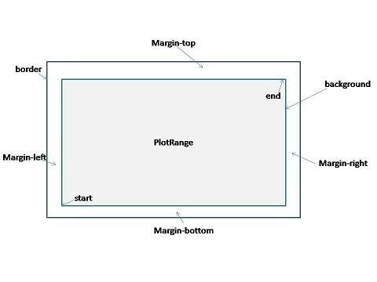
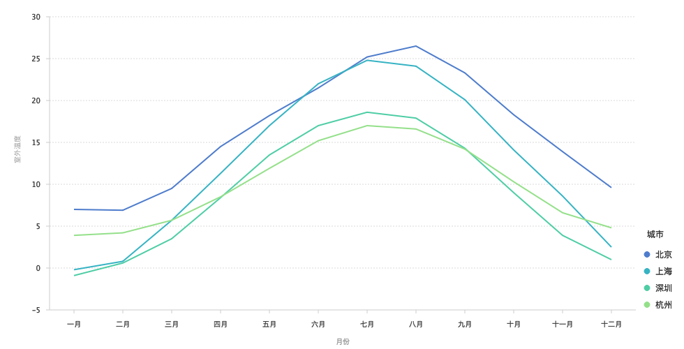
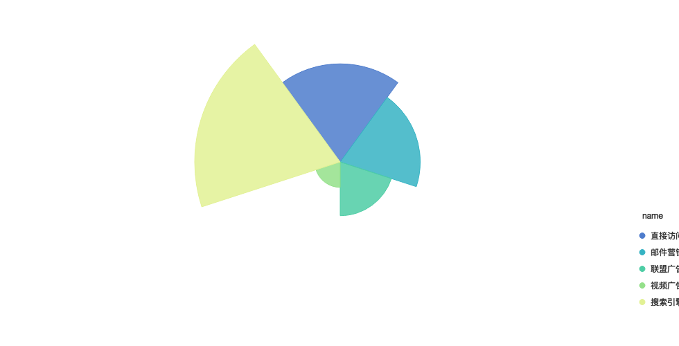
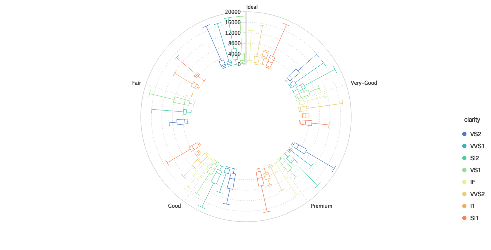
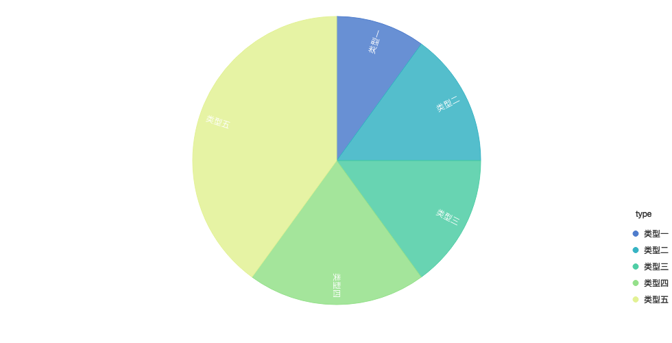
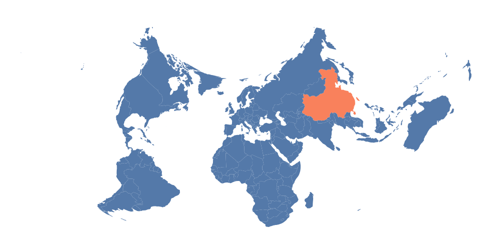

语法
Chart
概述
用于创建图表的类，用于为创建的图表设置属性以及各种配置项方法。
语法
下面是创建图表的语法，生成的 chart 提供了图表配置的各种方法，下面会介绍到。
var chart = new G2.Chart({
id: 'c1',
width: 1000,
height: 500,
plotCfg: {
margin: [10, 20, 10, 20],
}
});属性
chart 对象的所有属性获取方式如下：
chart.get('属性名');下面对所有的属性依次作说明介绍：
idString
创建图表的 DOM 容器 id。
containerHTMLElement
除了传递 id 值来指定图表容器，也支持直接传入容器的 html 节点对象。
widthString
设置图表的宽度
heightString
设置图表的高度
dataArray
设置图表的数据源，data 是一个包含 JSON 对象的数组。通常我们会使用 chart.source(data[, colDefs]) 设置数据源。
animateBoolean
chart 是否执行动画，默认值为 true，执行
plotCfgObject
设置图表绘图区域的配置信息，包括边距、边框、背景图片等信息，如下图所示：

支持的配置属性:
var plotCfg = {
margin: [10,20,20,30], // 边距设置，接受参数同 css 的 margin
border: {
stroke: 'red', // 边颜色
'stroke-width': 1, // 边框粗细
}, // 边框设置 图形属性
background: {
stroke: 'red', // 边颜色
'stroke-width': 1, // 边框粗细
fill: '#fff', // 背景色
radius: 30 // 圆角设置
} // 背景设置 图形属性
};图形属性详见。
canvasObject
在教程 G2.Chart 对象章节中提到，G2 绘制的图表由三层 canvas 组成，其中 canvas 用于绘制 geom。
获取方式：
chart.get('canvas');frontCanvasObject
获取方式：
chart.get('frontCanvas');backCanvasObject
用于绘制坐标轴 axis。
获取方式：
chart.get('backCanvas');方法
source(data[, defs])Method
设置图表的数据源
参数
data数据源，格式为 JSON 形式的数组
defs【可选】，是一个对象，用于数据字段的定义，如数据的类型，显示别名，时间类型的格式等，不同的数字类型的配置项不同，详情参考
示例
var data = [
{type: 0, value: 1},
{type: 1, value: 2},
{type: 2, value: 3},
];
chart.source(data, {
type: {
type: 'cat', // 声明 type 字段为分类类型
values: ['A', 'B', 'C'] // 重新显示的值
alias: '类型' // 设置属性的别名
}
})col(dim, cfg)Method
为对应的 dim 进行列定义，当需要对多个字段进行列定义时，推荐使用 chart.source(data, defs))。
参数
dim数据源中对应的某个字段名，表示只为该 dim 进行列定义。
cfg是一个对象，用于数据字段的定义，如数据的类型，显示别名，时间类型的格式等，不同的数字类型的配置项不同，详情参考。
示例
var data = [
{type: 0, value: 1},
{type: 1, value: 2},
{type: 2, value: 3},
];
chart.col('type', {
type: 'cat', // 声明 type 字段为分类类型
values: ['A', 'B', 'C'] // 重新显示的值
alias: '类型' // 设置属性的别名
});axis(dim, cfg)Method
设置坐标轴样式。
chart.axis(false)
不显示所有的坐标轴。
chart.axis(dim, cfg)
参数
dimdim 对应数据源中的字段名，即指定设置该字段对应的坐标轴显示样式。
cfg坐标轴配置信息，如果值为
false，表示不显示该字段对应的坐标轴，否则是一个 Object 对象，包含的可配置属性如下：
chart.axis('dim', false); // 不显示该字段对应的坐标轴
chart.axis('dim', {
position: 'top', // 设置坐标轴的显示位置，可取值 top bottom left right
formatter: function(dimValue) {
return (dimValue / 1000).toFixed(0) + 'k';
}, // 回调函数，用于格式化坐标轴上显示的文本信息
line: {
'stroke-width': 1, // 设置线的宽度
stroke: '#ccc' // 设置线的颜色
}, // 设置坐标轴线的样式，如果值为 null，则不显示坐标轴线 图形属性
labels: {
label: {
'text-anchor': 'middle', // 文本对齐方向，可取值为： start middle end
fill: '#404040', //文本的颜色
'font-size': '12', // 文本大小
'font-weight': 'bold' // 文本粗细
}, // 设置坐标轴文本的显示样式，如果值为 null，则不显示坐标轴文本 文本属性
autoRotate: true // 是否需要自动旋转
},
title: {
'font-size': '12',
'text-anchor': 'middle',
fill: '#999',
'font-weight': 'bold'
}, // 坐标轴标题设置，如果值为 null，则不显示标题 文本属性
tickLine: {
'stroke-width': 1,
stroke: '#ccc',
value: 5,
}, // 坐标点对应的线，null 不显示 图形属性
titleOffset: 45, // 设置标题距离轴线的距离
labelOffset: 20, // 标轴文本距离轴线的距离
grid: {
line: {
stroke: '#d9d9d9',
'stroke-width': 1,
'stroke-dasharray': [4, 4]
}, // 代表栅格线的类型，line polygon circle 只能选择一种 图形属性
minorLine: 0, // 次要线的配置项
minorCount: 0, // 2个Grid线中间的次要线的数目
odd: {
fill: 'red'
}, // 如果值为 null，则不显示。栅格内部的奇数背景 图形属性
even: {
fill: 'red'
} // 如果值为 null，则不显示。栅格内部的偶数背景 图形属性
}, // 坐标轴栅格线的配置信息，默认只有左边的坐标轴带有栅格线，null 为不显示。
gridAlign: 'start'// 栅格的位置跟坐标点(tick)的对齐方式，当前仅支持 start和middle
});legend(dim, cfg)Method
设置图例样式。
chart.legend(false)
不显示所有的图例。
chart.legend(cfg)
为默认的图例进行配置，在图例章节我们提到过，shape, color, size 这三个图形属性如果判断接收的参数是输入数据的字段时，会自动生成不同的图例。所以当 chart.legend() 第一个参数是一个 Object 对象时，表示默认为所有自动生成的图例设置样式。
参数-分类图例
chart.legend({
position: 'right', // 图例的显示位置，有 'top','left','right','bottom'四种位置，默认是'right'。
leaveChecked: false, // 是否保留一项不能取消勾选，默认为 false，即不能取消勾选。
title: null, // 是否展示图例的标题，null 为不展示，默认 top bottom 两个位置的图例不展示。
spacingX: 16, // 用于 position 为 top 或者 bottom 时调整子项之间的水平距离
spacingY: 24, // 用于 position 为 left 或者 right 时调整子项之间的垂直距离
unChecked: '#CCC', // 未选中时marker的颜色
wordSpaceing: 2, // marker和文本之间的距离
col: 1, // 列数
word: {
fill: 'red'
}, // 文本属性
back: {
fill: 'red'
} // 图例外边框和背景的配置信息，是一个矩形 图形属性
});参数-连续图例
chart.legend({
width: 30, // 宽度
height: 80, // 长度
position: 'right', // 图例的显示位置，有 'top','left','right','bottom'四种位置，默认是'right'。
title: null, // @type {ATTRS-Text || null} 是否展示图例的标题，null 为不展示，默认 top bottom 两个位置的图例不展示。
word: {
fill: 'red'
}, // 文本属性
back: {
fill: 'red'
} // 图例外边框和背景的配置信息，是一个矩形 图形属性
});chart.legend(dim, cfg)
参数
dim[String] 类型，可以传入对应图例的数据源字段名也可以传入对应图例的位置（right、left、top、bottom）
cfg为对应字段的图例或者对应位置的图例配置信息，属性同上述，这里不再说明。
coord(type, cfg)Method
设置坐标系，并可对坐标系进行各种操作。注意 chart.coord(type[, cfg]) 操作返回的不是 chart 对象，而是关于 Coord 的一个辅助类，以便进行坐标系的各种变换。
参数
type坐标系的类型，具体包括：
| type | 说明 | 示例 |
|---|---|---|
rect |
默认类型，直角坐标系，由x, y两个垂直的维度构成。 |  |
polar |
极坐标系，由角度和半径2个维度构成。 |  |
plus |
一种特殊的极坐标系，原点不从圆心开始。 |  |
theta |
一种半径固定的极坐标系，常用于饼图。 |  |
map |
地理坐标系，支持不同类型的地理投影 |  |
cfg【可选】 坐标系的配置信息。
对于 type 为
polar、plus、theta这三种类型的坐标系，其可配置的 cfg 属性如下：chart.coord('polar | plus | theta', { radius: 0.5, // 设置半径，值为 0 至 1 的小数 inner: 0.3 // 内部极坐标系的半径，[0 - 1]的小数，对于 plus 坐标系，默认值为 0.5 });对于
map类型的坐标系，情况比较特殊，对于不同的投影支持的配置参数不同。目前，您可以直接复制下列代码即可使用 G2 提供的map坐标系。// 适用于中国地图 chart.coord('map', { projection: 'albers', // 指定投影方法 basic: [110, 0, 25, 47], // 指定投影方法的基本参数，[λ0, φ0, φ1, φ2] 分别表示中央经度、坐标起始纬度、第一标准纬度、第二标准纬度 max: [16.573, -13.613], // 指定投影后最大的坐标点 min: [-27.187, -49.739] // 指定投影后最小的坐标点 }); // 适用于世界地图 chart.coord('map', { projection: 'albers', // 指定投影方法 basic: [0, 0, 0, 60], // 指定投影方法的基本参数，[λ0, φ0, φ1, φ2] 分别表示中央经度、坐标起始纬度、第一标准纬度、第二标准纬度 max: [161.89, 120.635], // 指定投影后最大的坐标点 min: [-144.485, -27.666] // 指定投影后最小的坐标点 }); // 适用于世界地图 chart.coord('map', { projection: 'mercator', max: [180, 165.65], // 指定投影后最大的坐标点 min: [-180, -67.21] // 指定投影后最小的坐标点 });
坐标系变换
可支持的变换操作：
rotate(angle): 坐标系旋转，angle 为旋转的角度，是一个度数值。
scale(sx, sy): 坐标系缩放，sx 代表 x 方向缩放比例，sy 代表 y 方向缩放比例。
reflect(): 坐标系转置，将 x 或者 y 的起始、结束值倒置
transpose(): 将坐标系 x 轴和 y 轴转置。
上述操作均可支持链式调用，如下：
chart.coord().rotate(70).scale(1.5, 1.5).reflect('xy').transpose();facet(dimArray, cfg)Method
设置分面的切割维度和配置信息。
参数
dimArray用于切割分面的数据源字段，是一个数组 Array。
cfg分面的配置信息。具体效果可参见分面，下面主要列出每一种分面类型支持的参数配置。
chart.facet([dims], { type: 'rect', // 默认类型，指定 2 个维度作为行列，形成图表的矩阵。 margin: [10, 10] // 每个分面间的距离，使用方法同 css 中的 margin }); chart.facet([dims], { type: 'list', cols: 2, // 每行有几个分面，超过的分面自动折行 margin: [10, 10] // 每个分面间的距离，使用方法同 css 中的 margin }); chart.facet([dims], { type: 'circle', margin: [10, 10] // 每个分面间的距离，使用方法同 css 中的 margin }); chart.facet([dims], { type: 'tree', smooth: true, // 各个树节点的连接线是否是平滑的曲线 line: { stroke: 'red', // 边颜色 'stroke-width': 1 // 边框粗细 } // 连接各个树节点的线的配置项 }); chart.facet([dims], { type: 'mirror', transpose: true // 设置镜像是否反转，默认为 false，不翻转 });
tooltip([enable, ]cfg)Method
设置显示的提示信息的内容
chart.tooltip(false)
表示禁用 tooltip。
chart.tooltip(true, cfg)
参数
enable
当 enable 为 true 时，表示 tooltip 可用，主要用于关闭 tooltip 之后重新开启。默认为 true。
cfg
tooltip 配置信息，是一个 Object 对象，当对 G2 自动生成的 tooltip 展示信息不满意时，用于可以通过这个方法进行自定义，当然稍后我们还会介绍一个更方便的方法。
chart.tooltip(true, {
title: null, // tooltip 不展示title
map: {
title: 'dim | const', // 当需要展示 title 时，可在 map 中设置 title 对应的数据源字段或者设置为一个常量
name: 'dim | const', // 设置 name 对应的数据源字段或者设置为一个常量
value: 'dim' // 设置 value 对应的数据源字段
}, // 用于重新设置 tooltip 的显示内容
offset: 15, // 偏移量，设置tooltip 显示位置距离 x 轴方向上的偏移
crosshairs: true, // 是否展示 tooltip 的辅助线，默认为 false，不展示
crossLine: {
stroke: '#666'
}, // crosshairs 为 true 时，为辅助线设置样式
padding: [10, 10, 10, 10], //内边距
back: {
fill: 'red'
} // 图例外边框和背景的配置信息，是一个矩形 图形属性
});下面是自定义 tooltip 模板的参数配置：
chart.tooltip(true, {
custom: true, // 表示使用自定义的模板显示 tooltip
html: '<div class="ac-tooltip" style="position:absolute;visibility: hidden;"><h4 class="ac-title"></h4><table class="ac-list custom-table"></table></div>', // tooltip 的 html 外层模板
itemTpl: '<tr><td>{index}</td><td style="color:{color}">{name}</td><td>{value}</td></tr>', // 使用 html 时每一个显示项的模板，默认支持 index, color, name, value 这四个字段。
offset: 50, // 偏移量，设置tooltip 显示位置距离 x 轴方向上的偏移
customFollow: false // 设置 tooltip 是否跟随鼠标移动，默认为 true，跟随。
});示例
var data = [
{"month":0,"tem":7,"city":"tokyo"},
{"month":1,"tem":6.9,"city":"tokyo"},
{"month":2,"tem":9.5,"city":"tokyo"},
{"month":3,"tem":14.5,"city":"tokyo"},
{"month":4,"tem":18.2,"city":"tokyo"},
{"month":5,"tem":21.5,"city":"tokyo"},
{"month":6,"tem":25.2,"city":"tokyo"},
{"month":7,"tem":26.5,"city":"tokyo"},
{"month":8,"tem":23.3,"city":"tokyo"},
{"month":9,"tem":18.3,"city":"tokyo"},
{"month":10,"tem":13.9,"city":"tokyo"}
];
var chart = new G2.Chart({
id: 'c1',
width: 800,
height: 400
});
var defs = {'month':{
type: 'cat',
values: ['一月','二月','三月','四月','五月','六月','七月','八月','九月','十月','十一月','十二月']
}};
chart.source(data,defs);
chart.tooltip(true,{ // 第一个参数是控制是否显示tooltip，可以设置为false，不显示tooltip
custom: true,
html: '<div class="ac-tooltip" style="position:absolute;visibility: hidden;"><p class="ac-title"></p><table class="ac-list custom-table"></table></div>', // tooltip的外层模板
itemTpl: '<tr><td>{index}</td><td style="color:{color}">{name}</td><td>{value}</td></tr>', // 支持的字段 index,color,name,value
offset: 50
});
chart.line().position('month*tem');
chart.render();chart.tooltip(cfg)
默认显示 tooltip，cfg 配置信息同上。
guide()Method
为图表添加自定义的辅助元素，如辅助线、辅助图片、辅助文本等，具体介绍可详见guide。chart.guide() 方法会返回一个 GuideAssist 对象，该对象支持一下各种辅助元素的绘制，并且还可以自定义显示样式。
chart.guide().line(from, to, cfg)
绘制辅助线。
参数
from,to分别表示线的起点和终点，这两个参数均为数组 Array 格式： [x, y]：
- x：是 x 轴坐标对应字段的值，是原始数据值，不是画布坐标。
- y：是 y 轴坐标对应字段的值，是原始数据值，不是画布坐标。
当然，如果 x y 值为分类类型的话，还可以传入索引值。
cfg
// 添加辅助线
chart.guide().line([startXValue, startYValue], [endXValue, startYValue], {
stroke: '#999', // 线的颜色
'stroke-dasharray': [0, 2, 2], // 虚线的设置
'stroke-width': 3 // 线的宽度
});chart.guide().image(from[, to], cfg)
绘制辅助线。
参数
from,to同chart.guide.line()，但是这里的to参数可选。cfg
// 添加辅助图片
chart.guide().image([startXValue, startYValue], [endXValue, startYValue], {
src: 'http://gtms02.alicdn.com/VXXXXaZX.png', // 图片路径
width: 160, // 宽度，可以不设置，如果设置了end，此属性无效
height: 230 // 高度，可以不设置，如果设置了end，此属性无效
});chart.guide().text(from, text, [cfg])
绘制辅助文本
参数
from同chart.guide.line()。text辅助文本显示内容。
cfg辅助文本的显示样式配置，可选，不配置使用默认 G2 提供的配置。
// 添加辅助文本
chart.guide().text([startXValue, startYValue], '我是辅助文本呀！', {
fill: '#666', // 文本颜色
'font-size': '12' // 文本大小
});chart.guide().rect(from, to, [cfg])
绘制辅助框
参数
fromto同chart.guide.line()。cfg辅助框的显示样式配置，可选，不配置使用默认 G2 提供的配置。
// 添加辅助框
chart.guide().rect([startXValue, startYValue], [endXValue, startYValue], {
'stroke-width': 0, // 辅助框的边框宽度
fill: DEFAULT_COLOR, // 辅助框填充的颜色
'fill-opacity': 0.1 // 辅助框的背景透明度
});chart.tag().rect(from, to, text, [cfg])
绘制辅助标记。
参数
fromto同chart.guide.line()。text辅助标记文本内容， String。
cfg辅助标记的显示样式配置，可选，不配置使用默认 G2 提供的配置。
// 添加辅助标记
chart.guide().tag([startXValue, startYValue], [endXValue, startYValue], '文本', {
line: {
stroke: '#999',
'stroke-dasharray': [0, 2, 2]
}, // 辅助标记中连接线的样式配置
text: {
fill: '#666',
'font-size': '12',
'text-anchor': 'middle'
}, // 辅助标记中文本的样式配置
rect: {
'stroke-width': 0,
fill: '#999',
'fill-opacity': 0.1
} // 辅助标记中背景框的样式配置
});chart.tag().arc(from, to, [cfg])
绘制辅助弧线。
参数
fromto同chart.guide.line()。cfg辅助弧线的显示样式配置，可选，不配置使用默认 G2 提供的配置。
// 添加辅助标记
chart.guide().arc([startXValue, startYValue], [endXValue, startYValue], {
stroke: '#999', // 线的颜色
'stroke-dasharray': [0, 2, 2], // 虚线的设置
'stroke-width': 3 // 线的宽度
});参数
fromto同
chart.guide.line()。text辅助标记文本内容， String。
cfg辅助标记的显示样式配置，可选，不配置使用默认 G2 提供的配置。
// 添加辅助标记
chart.guide().tag([startXValue, startYValue], [endXValue, startYValue], '文本', {
line: {
stroke: '#999',
'stroke-dasharray': [0, 2, 2]
}, // 辅助标记中连接线的样式配置
text: {
fill: '#666',
'font-size': '12',
'text-anchor': 'middle'
}, // 辅助标记中文本的样式配置
rect: {
'stroke-width': 0,
fill: '#999',
'fill-opacity': 0.1
} // 辅助标记中背景框的样式配置
});filter(dim, remained)Method
过滤数据，如果存在对应的图例，则过滤掉的字段置灰。只适用于分类类型的字段。
参数
dim指定过滤数据源的哪一个字段。
remained指定保留的字段值。
chart.filter('cut', ['Ideal', 'Good']); // 仅显示切割工艺Ideal,Good的钻石
animate(enable)Method
是否执行图表内部的图形动画。enable 是一个布尔值 Boolean，默认为 enable 值为 true，表示执行动画。
render()Method
绘制图表，当调用这个方法后，图表即可被渲染绘制出来。
clear()Method
清除所有的图层。
destroy()Method
销毁图表，删除生成的图表。
repaint()Method
图表重绘，数据结构不发生改变。
changeData(data)Method
用于修改图表的数据源，注意这里 data 的数据结构需要同原始的数据结构保持一致。
changeSize(width, height)Method
更改图表的大小。width 代表宽度，height 代表高度。
getFacets()Method
获取图表中所有的分面，返回的结果是一个数据 Array。
getGeoms()Method
获取图表中所有的几何图形对象，返回的结果是一个数据 Array。
getViews()Method
获取图表中所有的视图对象，返回的结果是一个数据 Array。
getScale(dim)Method
dim 为数据源的某个字段名，该方法用于获取该 dim 对应的度量scale对象。
getPosition({xDim: value, yDim: value})Method
获取数据对应在画布空间的坐标，返回的结果为一个对象，格式如下：
{
x: 12, // 画布上的横坐标
y: 34 // 画布上的纵坐标
}getTooltipItems(point)Method
根据传入的坐标点 point，获取当前坐标点上的 tooltip 信息，point 的格式如下，表示的是画布坐标：
var point= {
x: 100,
y: 200
}参数
接收的参数是一个对象，按照顺序指定 x 轴对应的字段名和对应的数值、y 轴对应的字段名和对应的数值，如下：
var data = {
cut: 'a', price: 1,
cut: 'b', price: 2,
cut: 'c', price: 3,
cut: 'd', price: 4
};
chart.getPosition({
cut: 'b',
price: 2
});showTooltip(point)Method
根据传入的坐标点显示对应的 tooltip 信息，这个方法通常同 chart.getPosition(data)) 配合使用。
参数
pointpoint 是一个对象，代表画布上的坐标点，参数格式如下：
{
x: 12, // 画布上的横坐标
y: 34 // 画布上的纵坐标
}事件
chart 对象提供了各种事件，方便用户扩展交互。基本的事件用法如下：
chart.on('eventType', fn); // 添加事件
chart.off('eventType', fn); // 移除事件chart.off('eventType', fn) 其中如果 fn 不指定，表示删除所有 eventType 事件，如果 eventType 和 fn 都不指定，则表示删除所有事件。
下面列出了 chart 支持的所有事件类型。
plotmove(ev)
鼠标在坐标系内移动时触发，在图表的坐标系外不触发。
ev表示事件触发时返回的对象，包含以下属性- x：画布上的x坐标；
- y：画布上的y坐标；
- target：canvas 元素；
- toElement：目标元素。
chart.on('plotmove', function(ev) {
var point = {
x: ev.x,
y: ev.y
};
var items = chart.getTooltipItems(point);
console.log(items);
});plotenter(ev)
当鼠标移动进入坐标系内时触发。
ev表示事件触发时返回的对象，包含以下属性- x：画布上的x坐标；
- y：画布上的y坐标；
- target：canvas 元素；
- toElement：目标元素。
chart.on('plotenter', function(ev) {
var point = {
x: ev.x,
y: ev.y
};
// do something
});plotleave(ev)
当鼠标移出坐标系内时触发。
ev表示事件触发时返回的对象，包含以下属性- x：画布上的x坐标；
- y：画布上的y坐标；
- target：canvas 元素；
- toElement：目标元素。
chart.on('plotleave', function(ev) {
var point = {
x: ev.x,
y: ev.y
};
// do something
});plotclick(ev)
点击坐标系内的事件。
- ev: 事件触发时返回的对象，包含以下属性
- x：画布上的x坐标；
- y：画布上的y坐标；
- target：canvas 元素；
- toElement：目标元素；
- shape：点击的图表元素，可能为空；
- data：选中图形代表的数据，可能为空；
- geom：选中图形，可能为空。
itemselected(ev)
图表元素被选中时触发。
- ev: 事件触发时返回的对象，包含以下属性
- shape：选中的图形；
- data：选中图形代表的数据；
- geom：所选中的图表图层,参考图表类型。
itemunselected(ev)
图表元素取消选中时触发。
- ev: 事件触发时返回的对象，包含以下属性
- shape：取消选中的图形；
- data：取消选中图形代表的数据；
- geom：所选中的图表图层,参考图表类型。
itemselectedchange(ev)
图表元素选中发生改变时触发。
- ev: 事件触发时返回的对象，包含以下属性
- shape：选中的图形；
- data：选中图形代表的数据；
- preShape：之前选中的图形；
- preData：选中图形代表的数据；
- geom：所选中的图表图层,参考图表类型。
tooltipchange(ev)
tooltip 信息更新改变的时候触发。使用详见教程 tooltip。
- ev：事件触发时返回的对象，包含以下属性：
- tooltip: 当前生成的 tooltip 对象；
- x: 画布上的 x 坐标；
- y: 画布上的 y 坐标；
- items: 当前 tooltip 中的数据项。
tooltipshow(ev)
tooltip 显示时触发。
- ev：事件触发时返回的对象，包含以下属性：
- tooltip: 当前生成的 tooltip 对象；
- x: 画布上的 x 坐标；
- y: 画布上的 y 坐标。
tooltiphide(ev)
tooltip 隐藏或者消失时触发。
- ev：事件触发时返回的对象，包含以下属性：
- tooltip: 当前生成的 tooltip 对象。